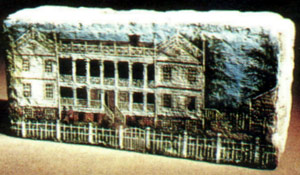

|
Whitehall is the name given to the tract of land located along the southern border of the city of Albany that originally was developed by Colonel John Bradstreet. By the mid-1760s, Bradstreet was paying substantial taxes on a portion of the west manor of Rensselaerswyck that included "Patroon's" (Castle) Island. Bradstreet's will later stated that he held what he called "a farm of which I have a lease in fee, and is now possessed by Tonycliff." The will left the farm to his namesake, John Bradstreet Schuyler. Young Schuyler sold the property to Leonard Gansevoort in 1789. The early history of "Whitehall" has been the subject of much speculation! At this point, the most comprehensive statement appears in Alice P. Kenney's 1969 book on the Gansevoort family. It reads: After the fire, Leonard and his family moved to the country house near Albany named Whitehall which Leonard had purchased, along with 1,090 acres of farm land, in 1789. Built in the 1760s by General Bradstreet, Whitehall was used as a Tory hideout during the Revolution and afterward passed into the hands of General Schuyler's son, John Bradstreet Schuyler, from whom Leonard bought it. This estate was far grander than the Gansevoort home on Market Street, and even than Leonard's comfortable town house, but he was not content with it as it was and promptly added two wings to it, each larger than the original building. Thereafter, distinguished guests, who had traveled a mile and a half out of town on the road later known as the Delaware Turnpike before they entered the drive shaded by huge horse-chestnuts, approached an H-shaped mansion with double verandas which presented a frontage of 110 feet and revealed a depth of 70 feet. The hospitable double doors opened into a great hall which filled most of the center section of the first floor. Also on this floor were the grand dining room in one wing and in the other the family dining room, the library and the "dood kamer," according to Dutch custom reserved for laying out the dead. In the basement was the kitchen; on the second floor were bedrooms and, over the large dining room, a bballroom which opened on the upstairs verandas. The principal rooms were paneled and furnished in mahogany, which formed a fitting background for Leonard's treasures of monogrammed cristal, fine porcelain, and heirloom silver. All of this magnificance was kept in perfect order by trusted and faithful slaves, and was partly supported by cultivation of the surrounding farm. It soon became famous for lavish social functions. Leonard Gansevoort lived at Whitehall until his death in 1810. Then the property passed to his daughter, Magdalena. During the nineteenth century, the farm was separated from the estate.  The building known as Whitehall remained the home of Jacob Ten Eyck and his wife Magdalena Gansevoort for many years. Ten Eyck's obituary in 1862 stated that he had lived there since 1800. After 1872, it was located within the boundaries of an expanded city. Later, the site was known as "Whitehall Place." The main building was located at the confluence of today's Whitehall Road, Delaware Avenue, and Ten Eyck Avenue. The Whitehall shown here was painted on a brick and depicted the structure eleven years before it burned in 1882. Taxes: In 1767, that assessment was 76 pounds. This description was printed on pp. 136-37, of The Gansevoorts of Albany. That source also mentions a silk sampler with an image of Whitehall embroaidered on it (p. 173). His obituary was printed in Munsell's Collections, 2:115. This photograph of the painted brick appeared in Albany: Capital City on the Hudson. The original is in the collection of the Albany Institute of History and Art. This excerpt is from HMGFM and contains interesting and puzzling information about Whitehall and its occupants: "after that he (Abraham Cuyler Ten Eyck - b. 1830) removed with his large and growing family to Whitehall Place, the old historical home of General John Bradstreet, of the British forces, used as his headquarters during the campaigns against the Indians and French. This house was built about 1750 by General Bradstreet; located about one hundred and fifty yards to the west of what became Delaware avenue, and the highway near it was long known as Whitehall road; its household furniture was the envy of all the neighbors; many interesting oil portraits hung upon its walls, and at the large receptions the family silver figured prominently; one room had been used by General Bradstreet as his office, and another had been dedicated as the "death chamber." After the war the house was purchased from General Bradstreet by Leonard Gansevoort, brother of General Peter Gansevoort; it was remodeled and enlarged in 1776 or 1780, becoming a mansion, one hundred and ten feet in front and seventy-five feet deep. The property contained some two thousand acres and came into the Ten Eyck family by the marriage of Magdalena, daughter of Leonard Gansevoort, to Jacob Ten Eyck, eldest son of Abraham Ten Eyck. Jacob Ten Eyck was a man of prominence, being judge of Albany county, assemblyman, and held other minor offices. The destruction of this house by fire in 1883 was the greatest misfortune in the life of Mr. Ten Eyck; the place was known as Ten Eyck Park. In politics Mr. Ten Eyck was a Democrat. He was a member of the First Reformed Protestant Dutch Church, a man of strong convictions, a staunch friend to all who were favored with his intimacy and possessed of hosts of friends. Everyone realized that he was unusually generous, even to the extent of a fault, and while not a lawyer, in later years his advice was sought on many questions by his acquaintances." first posted: 06/06/01; last revised 3/10/04 |